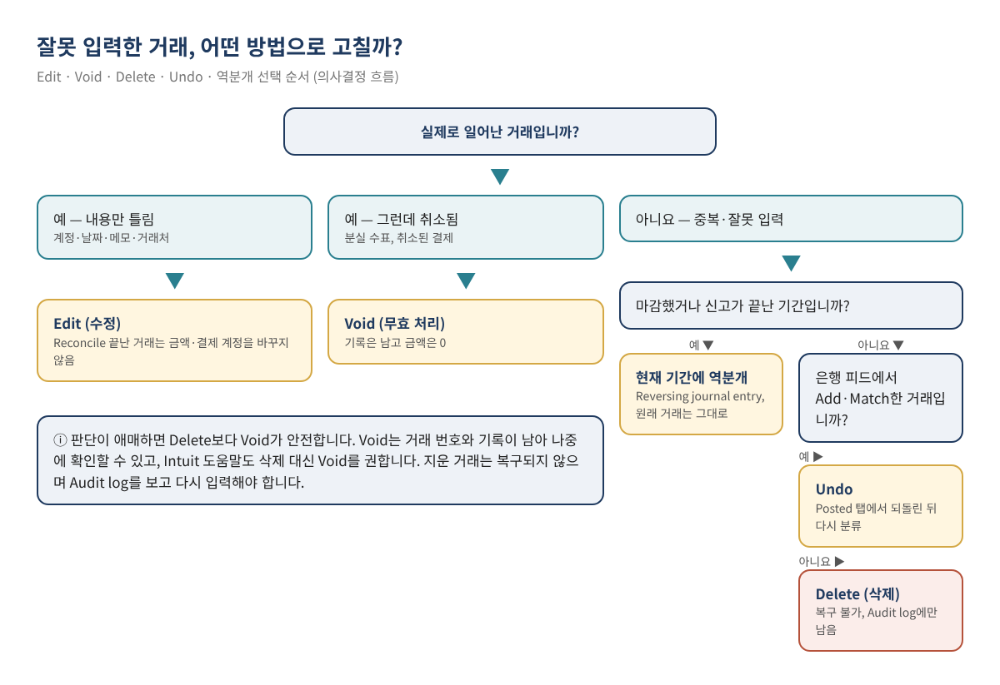
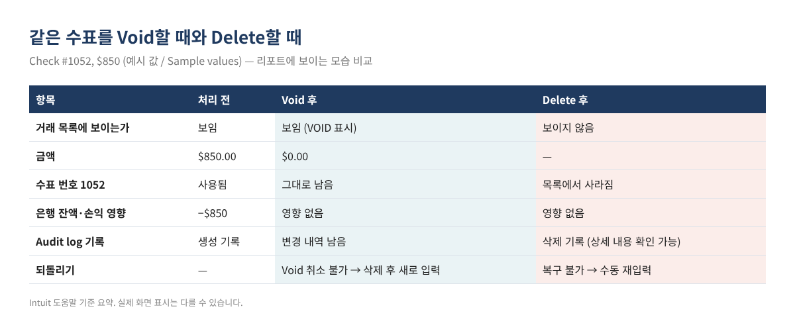
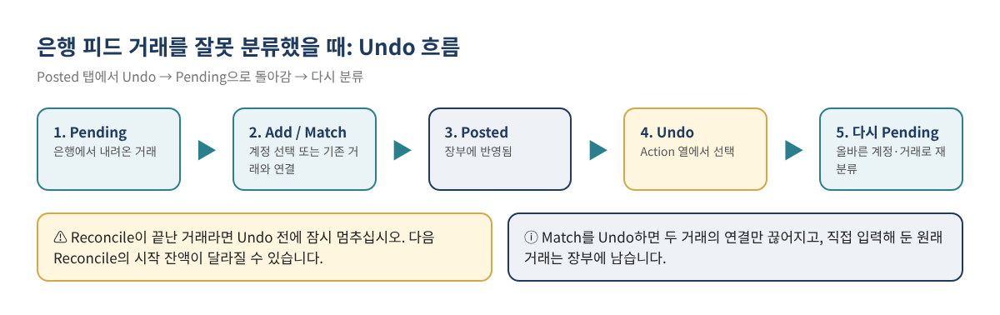
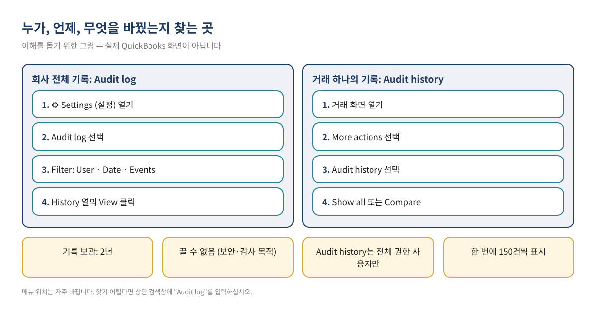

장부를 쓰다 보면 실수는 반드시 생깁니다. 같은 Bill을 두 번 입력하거나, 우편으로 보낸 수표가 분실되거나, 은행 피드에서 카드 매출 정산금을 엉뚱한 계정으로 분류하는 일은 흔합니다. 문제는 실수 자체보다 고치는 방법입니다. 급한 마음에 거래를 지워 버리면 이미 Reconcile을 마친 잔액이 어긋나고, 회계사에게 넘긴 지난달 숫자가 바뀌며, 나중에 "이 수표 번호는 왜 비어 있는가"라는 질문에 답하기 어려워집니다.
이 글은 QuickBooks Online(QBO)에서 잘못된 거래를 고치는 다섯 가지 도구, 즉 Edit(수정), Void(무효 처리), Delete(삭제), Undo(되돌리기), 역분개(Reversing journal entry)를 언제 어떻게 쓰는지 정리합니다. 그리고 누가 언제 무엇을 바꿨는지 확인하는 Audit log와, 지난 기간을 보호하는 Close the books 설정까지 다룹니다. 시리즈 첫 글 QuickBooks Online 기초 가이드에서 짧게 소개한 내용을 자세히 풀어 쓴 글입니다.
이런 분께 필요합니다 ☐ 중복 입력된 거래를 지워도 되는지 망설여지는 분 ☐ 분실·취소된 수표를 어떻게 처리해야 할지 모르는 분 ☐ 은행 피드에서 잘못 분류한 거래를 되돌리고 싶은 분 ☐ Reconcile 끝난 달의 숫자가 갑자기 바뀌어 당황한 적이 있는 분 ☐ 직원이나 외부 담당자가 장부를 함께 쓰는데, 누가 무엇을 고쳤는지 확인하고 싶은 분
Intuit 도움말에 따르면 Void한 거래는 장부에 기록은 남지만 합계에는 영향을 주지 않으며, 금액이 0이 되고 "void"로 표시됩니다. 반면 Delete한 거래는 Audit log를 제외한 모든 곳에서 사라집니다. 같은 "없애기"처럼 보여도 결과는 크게 다릅니다.
| 도구 | 무엇을 하나 · 기록 | 이럴 때 씁니다 | 주의할 점 |
|---|---|---|---|
| Edit (수정) | 거래 내용을 고침. 변경 내역은 Audit history에 남음 | 계정·날짜·메모·거래처가 틀렸을 때 | Reconcile 끝난 거래의 금액·결제 계정 변경은 피함 |
| Void (무효 처리) | 금액을 0으로 만들고 거래는 VOID로 남김 | 분실·취소된 수표, 실제로 발행했다가 취소한 결제 | Void는 취소할 수 없음 (지우고 새로 입력) |
| Delete (삭제) | 거래를 없앰. Audit log에만 기록 | 중복 입력, 테스트로 만든 거래 | 복구 불가, 수동으로 다시 입력해야 함 |
| Undo (되돌리기) | 피드의 Add·Match를 취소. 피드 거래는 Pending으로 | 은행 피드에서 계정·Match를 잘못 골랐을 때 | Reconcile 끝난 거래는 먼저 영향 확인 |
| 역분개 (Reversing JE) | 반대 분개를 현재 기간에 입력. 원래 거래도 남음 | 마감했거나 세금 신고가 끝난 기간의 거래 | 두 거래 금액이 정확히 상쇄되는지 확인 |

거래 자체는 실제로 있었지만 계정(Category), 날짜, 메모, 거래처가 틀린 경우가 가장 흔합니다. 이때는 거래를 열어 해당 칸을 고친 뒤 저장하면 됩니다. 지우고 새로 만들 필요가 없고, 그렇게 하면 오히려 첨부한 영수증이나 은행 피드와의 연결이 끊어질 수 있습니다.
팁 — Reconcile 끝난 거래는 금액을 건드리지 않습니다. 이미 은행 명세서와 맞춰 둔 거래의 금액이나 결제 계정(Payment account)을 바꾸면 다음 Reconcile의 시작 잔액이 달라집니다. 계정(Category)만 바꾸는 것은 은행 잔액에 영향을 주지 않지만, 금액이 틀렸다면 아래 4장·6장의 방법을 먼저 검토하십시오. 이미 잔액이 어긋났다면 중복 거래와 Reconcile 차이 찾기 글이 도움이 됩니다.
Intuit 도움말 기준 경로는 다음과 같습니다. 왼쪽 메뉴 구성은 자주 바뀌므로, 찾기 어렵다면 상단 검색창에 거래 번호나 거래처 이름을 입력해 거래를 바로 여는 편이 빠릅니다.
도움말에는 Void할 수 있는 유형이 정해져 있다고 나옵니다. 판매 쪽은 인보이스·고객 결제(Payment) 등, 지출 쪽은 수표(Check)·지출(Expense)·Bill payment입니다. 목록에 없는 유형은 More 메뉴에 Delete만 보일 수 있습니다. 화면에 Void가 없다면 정말 지워야 하는 거래인지 다시 판단하십시오.
| 구분 | Intuit 도움말에 Void 가능으로 나온 유형 | 참고 |
|---|---|---|
| 판매 (Sales) | Invoice, Payment, Sales order 등 | 고객 결제를 QuickBooks Payments로 받았다면 아래 3-3 참고 |
| 지출 (Expenses) | Check, Expense, Bill payment | Bill 자체는 목록에 없음 → 화면에서 Void가 보이는지 확인 |
| 은행 피드 Excluded | 일괄 Delete만 가능 | 도움말상 일괄 삭제는 Excluded 거래에만 제공 |
삭제도 같은 More actions 메뉴에서 Delete를 고르면 됩니다. 다만 Intuit는 삭제한 거래는 복구할 수 없고, Audit log에서 원래 내용을 확인해 원래 날짜로 직접 다시 입력해야 한다고 안내합니다. 삭제된 거래만 모아 보여 주는 별도 리포트도 없습니다. 그래서 Intuit 도움말 역시 삭제 대신 Void를 권합니다.
Void도 되돌릴 수 없다는 점은 기억해 두십시오. 실수로 Void했다면 Void된 거래를 지우고 새로 입력하는 것이 도움말의 방법입니다.

카드나 ACH 결제를 QBO 안의 결제 서비스로 받았다면 장부상의 Void가 곧 결제 취소이기도 합니다. Intuit 도움말은 Void는 처리(정산) 전 결제를 취소하는 것이고, 정산이 끝난 뒤에는 Refund로 돌려줘야 한다고 설명합니다. 도움말 기준 카드 결제의 일괄 마감은 태평양 시간 오후 3시이며, 마감 시각은 바뀔 수 있으니 실제 작업 전 해당 도움말을 확인하십시오. 일반적인 환불·크레딧 처리는 인보이스부터 입금까지: 부분 결제·할인·환불·크레딧 글에서 자세히 다뤘습니다.
은행 피드에서 Add나 Match를 잘못 눌렀다면 거래를 지우기보다 Undo로 되돌리는 것이 정석입니다. 은행 연결 완전 정리 글에서 다룬 Bank transactions 화면 기준으로, Intuit 도움말의 순서는 다음과 같습니다.
도움말에 따르면 Match를 Undo하면 두 거래의 연결만 끊어지고 피드 거래는 Pending으로 돌아갑니다. 직접 입력해 둔 원래 거래(인보이스 결제, Bill payment 등)는 장부에 그대로 남으므로, 다시 Match하거나 필요 없으면 따로 정리해야 합니다.

주의 — Reconcile 끝난 거래의 Undo. Intuit는 이미 Reconcile된 거래를 Unmatch하기 전에는 회계 담당자와 먼저 상의하라고 안내합니다. 영향이 클 수 있기 때문입니다. 거래 하나의 Reconcile 상태를 풀려면 계정 Register에서 R 표시를 눌러 비우는 방법이 있지만, 다음 Reconcile의 시작 잔액이 바뀐다는 점을 알고 해야 합니다.
한 달 Reconcile 전체가 잘못됐다면 거래를 하나씩 고치기보다 Reconcile을 통째로 되돌릴 수 있습니다. Intuit 도움말에 따르면 이 기능은 Primary admin, In-house accountant, 그리고 QuickBooks Online Accountant로 접속한 회계사 사용자가 쓸 수 있습니다. 경로는 Reconcile → History by account에서 계정과 기간을 고르고 Action 드롭다운의 Undo를 선택하는 방식입니다.
이미 세금 신고를 마쳤거나 회계사에게 숫자를 넘긴 기간의 거래를 지우거나 고치면, 신고한 숫자와 장부가 달라집니다. Intuit의 다른 기간의 거래 Void 도움말은 이런 경우 원래 거래는 그대로 두고, 반대 방향의 분개(Reversing journal entry)를 거래를 취소한 것으로 보여 주고 싶은 날짜에 입력하는 방법을 안내합니다.
지난 기간을 실수로 고치는 일을 막으려면 Close the books를 설정해 두십시오. Intuit 도움말 기준 경로는 ⚙ Settings → Account and settings → Advanced → Accounting이며, 마감일(Closing date)과 비밀번호를 정할 수 있습니다. 이 설정은 관리자(Admin)만 바꿀 수 있고, 마감 후에 생긴 변경은 Exceptions to Closing Date 리포트(Reports에서 검색)로 확인합니다.
Intuit 도움말에 따르면 Audit log는 ⚙ Settings → Audit log에서 열고, Filter에서 사용자(User), 날짜(Date), 이벤트(Events)를 골라 좁힐 수 있습니다. 결과는 한 번에 150건씩 보이며, History 열의 View를 누르면 변경 전후 내용을 볼 수 있습니다. 로그인, 설정 변경, 고객·거래처·직원 정보 수정도 기록됩니다.
| 항목 | Intuit 도움말 내용 | 실무 의미 |
|---|---|---|
| 여는 곳 | ⚙ Settings → Audit log | 찾기 어렵다면 검색창에 "Audit log" 입력 |
| 필요 권한 | 활성 구독 + Admin 권한 | 직원 계정으로는 안 보일 수 있음 |
| 끌 수 있나 | 보안·감사 목적상 끌 수 없음 | 누가 지웠는지 나중에도 확인 가능 |
| 보관 기간 | 기록된 이벤트는 2년간 조회 가능 | 2년이 지난 내용은 미리 리포트로 보관 |
| 거래 하나의 기록 | 거래 열기 → More actions → Audit history → Show all / Compare | 전체 권한 사용자만 볼 수 있음 |
| 삭제된 거래 찾기 | 이벤트 필터로 좁히고 "Deleted" 검색 → View | 내용을 보고 원래 날짜로 다시 입력 |

가상의 세탁소 "선라이즈 클리너스"는 9월 30일까지 장부를 마감(Close the books)했습니다. 10월 말 장부를 점검하다가 아래 다섯 가지 실수를 발견했습니다. 업체와 금액은 모두 예시입니다.
| # | 발견한 문제 (예시 값 / Sample values) | 선택한 방법 | 처리 내용 |
|---|---|---|---|
| 1 | 세제 공급업체 Bill $1,240이 10/3, 10/4 두 번 입력됨 (둘 다 미지급) | Delete | Audit log로 누가 언제 입력했는지 확인 → 나중에 입력된 10/4 건 삭제 |
| 2 | 수리업체에 보낸 Check #1052 $850 우편 분실, 은행 미결제 | Void | #1052 Void → 새 Check #1058 $850 발행·입력 |
| 3 | 카드 매출 정산금 $2,300을 피드에서 Other income으로 Add | Undo | Posted 탭에서 Undo → Pending에서 매출 계정으로 다시 Add |
| 4 | 10/12 Expense $96의 계정이 Office supplies (실제는 Repairs) | Edit | Category만 Repairs & maintenance로 수정 (금액 그대로) |
| 5 | 마감된 9월에 가스 요금 Expense $315가 중복 입력 (Reconcile 때 미체크로 남음) | 역분개 | 10/31 Journal entry: 차변 Checking $315 / 대변 Utilities $315 |
정리 결과 10월 손익에서 Utilities가 $315 줄고, 9월 숫자는 바뀌지 않습니다. 은행 Register에서는 9월의 중복 Expense와 10월 역분개를 함께 정리해 두 거래의 합계가 0이 되게 합니다. Bill 중복은 아직 지급 전이라 삭제해도 은행 잔액에는 영향이 없었고, 수표는 Void로 번호 기록을 남겨 수표 번호가 빠진 이유를 나중에도 설명할 수 있습니다.
| 확인 항목 (예시 값) | 정리 전 | 정리 후 |
|---|---|---|
| A/P (외상 매입) 잔액 | $3,720 | $2,480 |
| 10월 Utilities 비용 | $410 | $95 |
| 10월 Sales (카드 매출) | $18,600 | $20,900 |
| 10월 Other income | $2,300 | $0 |
| 9월 손익 (마감 기간) | 변동 없음 | 변동 없음 |
Intuit 도움말 기준으로 삭제된 거래는 복구할 수 없습니다. Audit log에서 삭제된 거래를 찾아 View로 내용을 확인한 뒤, 원래 날짜로 다시 입력해야 합니다. 저장된 적이 없는 거래는 Audit log에도 남지 않습니다.
Void도 취소할 수 없습니다. Void된 거래를 지우고 새로 입력하는 것이 도움말의 방법입니다. 그래서 Void 전에 거래 번호와 금액을 한 번 더 확인하는 습관이 좋습니다.
관리자 권한으로 Audit log를 열고 사용자와 기간으로 필터를 걸면 됩니다. Audit log는 끌 수 없고 기록된 이벤트는 2년간 볼 수 있습니다. 공용 계정을 쓰면 누가 했는지 구분되지 않으니 사용자별로 계정을 만드십시오.
세금 신고를 이미 했다면 지난해 숫자를 바꾸는 것은 신고 내용과 장부를 다르게 만듭니다. 원래 거래는 두고 현재 기간에 역분개하는 방법이 일반적이며, 신고 수정이 필요한지는 신고를 담당한 세무 전문가와 상의하십시오.
Match한 경우에는 연결만 끊어지고, 피드 거래는 Pending으로 돌아갑니다. 직접 입력해 둔 원래 거래는 장부에 남으므로, 다시 Match하거나 필요에 따라 별도로 정리하십시오.
이 글은 일반적인 교육용 정보이며 세무·법률·재무 자문이 아닙니다. 개별 상황에 대한 판단은 자격을 갖춘 전문가와 상의하십시오. QuickBooks Online의 화면, 메뉴 이름, 요금제별 기능과 가격은 수시로 바뀌므로 실제 작업 전에 현재 화면과 Intuit의 공식 안내를 확인하십시오. 예시의 업체와 거래처, 금액은 모두 가상입니다.
QuickBooks is a registered trademark of Intuit Inc.; not affiliated with or endorsed by Intuit.